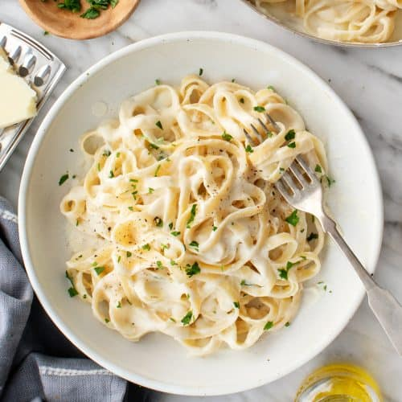

Fettuccine Alfredo

So delicious you'll be asking for a second helping!
An Italian pasta dish of fresh fettuccine tossed with butter and Parmesan cheese.
Ingredients
- 1 lb Fettuccine Pasta
- 6 Tablespoons Butter
- 1 Garlic cloved (minced)
- 1 1/2 cups Heavy Cream
- 1/4 teaspoon Salt
- 1 1/4 cup Shredded Parmesan Cheese
- 1/4 teaspoon Pepper
- 2 Tablespoons Italian Parsley (optional)
Steps
- In a large pot, heat water over high heat until boiling. Add salt to season the water. Once it is boiling, add fettuccine and cook according to package instructions.
- In a large skillet or pan, heat butter over medium heat. Add minced garlic and cook for 1 to 2 minutes. Stir in heavy cream.
- Let heavy cream reduce and cook for 5 to 8 minutes. Add half of the parmesan cheese to the mixture and whisk well until smooth. Keep over heat and whisk well until cheese is melted.
- Save some pasta water. The pasta water is full of flavor and can be used to thin out the sauce.
- Toss alfredo sauce with fettuccine pasta and add half of the parmesan cheese. Once it is tossed, garnish with the remaining parmesan cheese. Add a little pasta water if it needs to be thinned out.